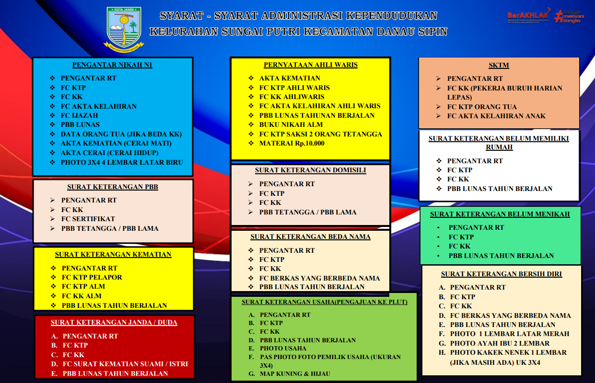

Melayani masyarakat dengan profesional, transparan, dan berintegritas demi mewujudkan Kelurahan Sungai Putri yang maju, mandiri, dan sejahtera.
.
Kelurahan Sungai Putri berkomitmen untuk memberikan pelayanan terbaik dengan menjunjung tinggi nilai profesionalisme, integritas, transparansi, dan keberpihakan kepada masyarakat. Setiap program dirancang untuk meningkatkan kualitas hidup seluruh warga.
Yang kami hormati, para tokoh masyarakat, perangkat kelurahan, pemuda, ibu-ibu PKK, serta seluruh warga Kelurahan Sungai Putri yang kami cintai dan banggakan.
Pertama-tama marilah kita panjatkan puji syukur ke hadirat Allah SWT, karena atas rahmat dan karunia-Nya kita dapat meluncurkan website Kelurahan Sungai Putri sebagai wujud nyata langkah kita menuju digitalisasi kelurahan.
Perkembangan teknologi informasi saat ini menuntut kita untuk bergerak maju. Kelurahan tidak boleh tertinggal. Website kelurahan ini adalah jendela digital yang akan membuka akses informasi, pelayanan, dan transparansi bagi seluruh masyarakat.
Melalui website ini, warga dapat dengan mudah mengetahui program kelurahan, berita kegiatan, laporan pembangunan, hingga layanan administrasi tanpa harus selalu datang ke kantor kelurahan.
Wassalamu'alaikum Warahmatullahi Wabarakatuh
Berbagai layanan administrasi dan sosial yang disediakan Kelurahan Sungai Putri untuk memenuhi kebutuhan seluruh warga.

Struktur Organisasi dan Tata Kerja Kelurahan Sungai Putri, Kecamatan Danau Sipin, Kota Jambi.
Kelurahan Sungai Putri secara resmi meluncurkan website kelurahan sebagai langkah nyata menuju digitalisasi pelayanan publik. Melalui portal ini, warga dapat mengakses informasi, layanan, dan pengumuman kelurahan kapan saja dan di mana saja tanpa perlu datang langsung ke kantor.
Kelurahan Sungai Putri melaksanakan program pemberdayaan masyarakat untuk meningkatkan ekonomi dan kesejahteraan warga.
Pelatihan keterampilan gratis diberikan kepada pemuda untuk meningkatkan kompetensi dan daya saing mereka di dunia kerja.
Kegiatan posyandu dan layanan kesehatan rutin dilaksanakan untuk memastikan kesehatan optimal seluruh warga kelurahan.
Kami siap melayani Anda. Datang langsung, hubungi via telepon, atau kirimkan pesan melalui formulir di bawah ini.
Jln. Prof. Dr. Sri Soedewi, SH, MH RT.12
Kelurahan Sungai Putri, Kecamatan Danau Sipin
Kota Jambi, Provinsi Jambi 37562
+62 (0741) XXX-XXXX
kelurahan.sungaiputri@jambikota.go.id
+62 8XX-XXXX-XXXX
Layanan pengaduan digital